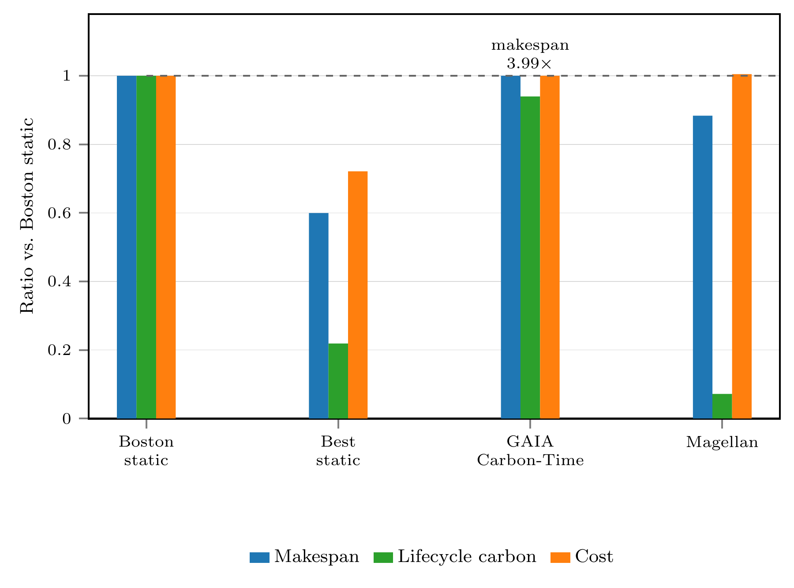
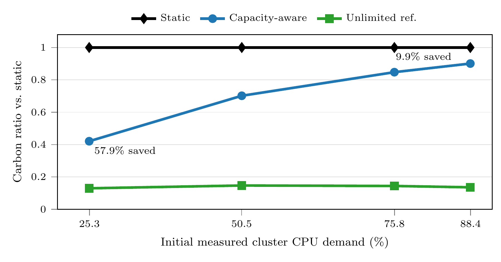
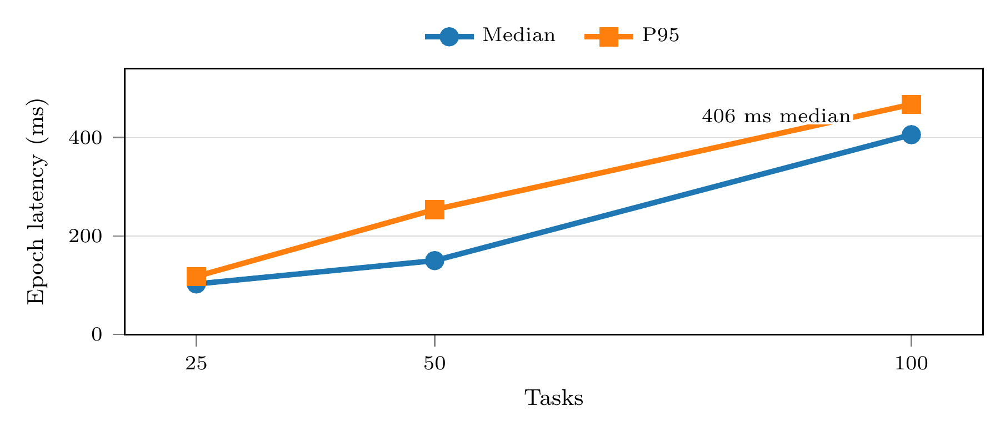
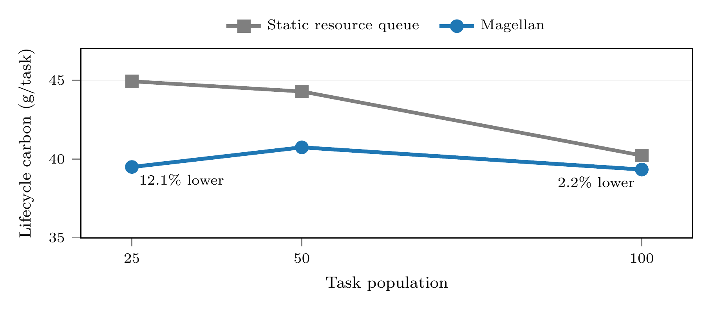

Magellan: A Carbon-Aware Task Scheduler for Geo-Distributed Systems
View the research posterAbstract
Magellan is a carbon-aware decentralized scheduler for long-running, stateful workloads across geographically distributed sites. Magellan includes scheduling and capacity arbitration at each peer.
Electricity carbon intensity changes across regions and over time. Moving a running job can unlock cleaner electricity, but checkpointing, transfer, restoration, and slower hardware can erase the benefit. Magellan compares those costs before choosing whether a workload should continue, pause, or migrate.
Key results
Best observed outcomes, shown with their experimental context.
- 13× carbon reduction
- Reduced emissions by up to 13× in the Google GCP evaluation while jointly accounting for makespan and monetary cost.
- 11.6% lower makespan
- Reported alongside the maximum carbon reduction at similar cost in the poster's summary evaluation.
- 57.9% capacity-aware savings
- At low utilization, falling to 9.9% near cluster saturation without destination oversubscription; scaling was evaluated through 100 concurrent tasks.
These measurements come from separate experiments with their own baselines.
How Magellan decides
Three possible actions, evaluated as one multi-objective decision.
Continue
Keep the workload at its current site when moving would not improve the weighted outcome enough.
Pause
Pause computation to allow for local conditions to improve.
Migrate
Bid for destination capacity, transfer state, restore execution, and hand off ownership after acceptance.
One score for every feasible action
Magellan compares the same three objectives before choosing continue, pause, or migrate.
S(x) = αT(x) + βC(x) + γ$(x)
- T
- completion time
- C
- lifecycle carbon
- $
- monetary cost
Only feasible actions are scored; capacity, the cost cap, and migration-overhead guardrails still apply.
Evaluation figures
The supplied figures are shown at full readable width. Select any figure to open the original image.
Recorded simulation at 75.8% initial measured CPU utilization. Nine tasks move across the geo-distributed sites as Magellan accepts migrations and transfers task ownership.
Open MP4
Makespan, lifecycle carbon, and cost relative to Boston static, the static of the greenest location, and a copy of GAIA (Pause only). Lower ratios are better; the GAIA makespan annotation reports 3.99×.
Open vector PDF
Capacity limits reduce opportunities to move work to cleaner sites. The unlimited reference shows the opportunity when destination capacity is unconstrained.
Open vector PDF
Scheduling epoch latency across task populations, measuring control-plane work rather than end-to-end migration time.
Open vector PDF
Per-task lifecycle carbon relative to a static resource queue. Savings narrow as the task population increases.
Open vector PDFResearch materials
Will Kaminski · Hari Sundar · Tufts University · SC26 Student Research Competition